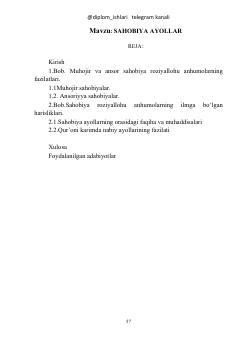

SAIslom tarixidagi muhojir va ansor sahobiya ayollarning hayoti va fazilatlari haqida risola.
Mazkur asar islom tarixidagi muhojir va ansor sahobiya ayollarning fazilatlari, hayot yo'li, ilmga bo'lgan intilishlari hamda jamiyatdagi o'rniga bag'ishlangan. Kitobda sahobiyalarning taqvosi, odobi, sabri va bugungi kundagi ayollar uchun ibratli jihatlari ilmiy-tarixiy manbalar asosida yoritib berilgan.